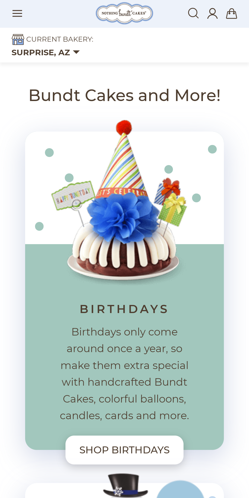
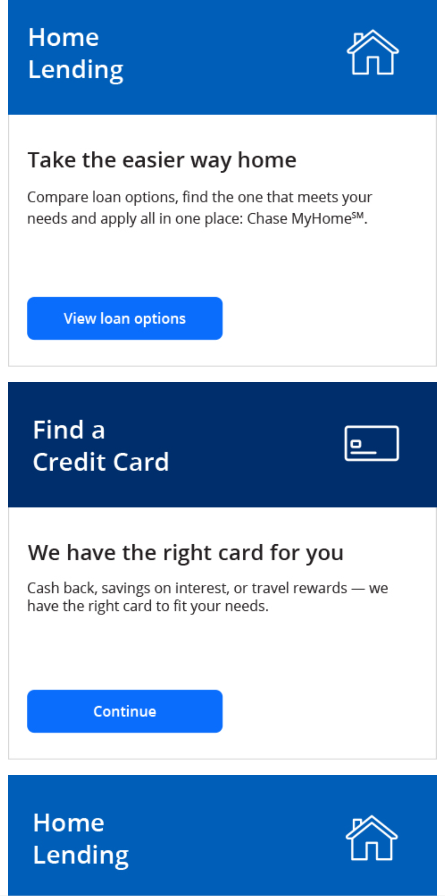

Visual Hierarchy
Nothing Bundt Cakes This screenshot portrays the design element of visual hierarchy well. The cake draws the eye first with all of it fun bright colors. The hat on the cake points up leading my eye to the large heading right above it ("Bundt Cakes and More!"). Then my eye goes down to the the page to the colored text area where I then look next at the bolder, all uppercase "Birthday" heading and then continues down the image to the white "Shop Birthdays" button. The use of color, and different font size and weight contribute to the visual hierarchy of this page.
White Space
ERA Real EstateThis screenshot has a good amount of white space and has a clean and simple design. The text has good margins on all sides and the images focal point is slightly off center allowing for more white space on the right side. The left-alignment of the text makes for a nice clean design. This screenshot image is not overcrowded and there is plenty of space for the viewer’s eye to rest.
Alignment
Chase Bank The neat left-alignment of the heading and body text along with edge of the smaller blue boxes is very evident in this screenshot. The icons, in the large blue heading boxes, are aligned with each other on the right side of the screen. Like items are aligned with each in each section making this design neat and clean.